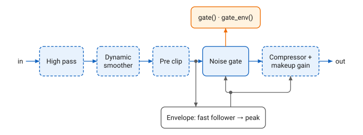
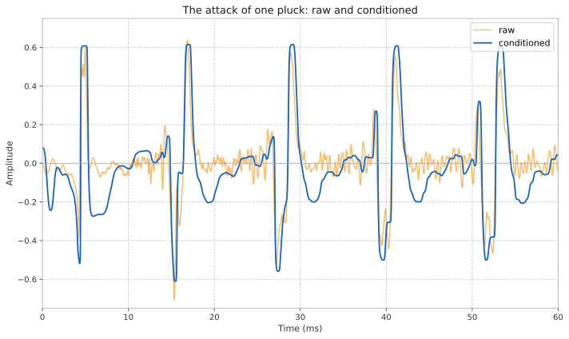

Signal Conditioner
Overview
signal_conditioner preprocesses and enhances a signal for analytical processes such as onset and pitch detection. A raw instrument signal carries sub-band rumble, wide dynamic swings, transient spikes, and low-level noise or string bleed between notes. signal_conditioner is a front-end chain that reduces each of these in one reusable stage, so a detector downstream receives a stable signal at a consistent level.
It is a fixed chain of Q building blocks, with a function call that processes one sample, and accessors for the internal envelopes and the gate state. The chain is:
-
High pass → Dynamic smoother → Pre clip → Envelope → Noise gate → Compressor + makeup gain

-
Dashed stages can be left out, see Bypassing Stages. The gate and the envelope always run.
-
gate()andgate_env()read the gate state. -
The envelope is measured after the clip, and drives both the gate and the compressor.
The stages:
-
High pass (High Pass Filter, 2nd-order Butterworth at
lowest_freq) removes sub-band rumble and DC below the lowest note of interest. -
Dynamic smoother (Dynamic Smoother, with its base frequency midway between
lowest_freqandhighest_freq) suppresses noise and preserves edges, so attacks keep their shape. -
Pre clip (
tanh_clipatpre_clip_level, see Clippers) soft-saturates transient spikes so they do not dominate the envelope. The tanh knee rounds them off. -
Envelope (Fast Envelope Follower feeding a Peak Envelope Follower) tracks the signal level. This envelope drives both the gate and the compressor.
-
Noise gate (Onset Gate, smoothed by an AR Envelope Follower) mutes the signal between notes, rejecting bleed and low-level noise while letting fast attacks through. The boolean gate is smoothed into a gain to avoid clicks.
-
Compressor + makeup gain (
Compressordriven by the envelope indecibel, plus a linear makeup gain) evens out the dynamics so the detector receives a consistent level.
signal_conditioner is the full chain. It is an alias for basic_signal_conditioner<>, a class template whose one parameter is a mask of stages to leave out at compile time (see Bypassing Stages). A bypassed stage costs none of its per-sample work, and its member becomes an empty stand-in.
The gate thresholds can be adjusted at runtime, for a noise floor or playing dynamics that change. See Mutators.
signal_conditioner shapes a signal for downstream detectors. Its output is not meant to be listened to.
|
Response

Figure 2 shows a few cycles of the attack of a low E pluck, raw and conditioned, on a shared axis. The raw pluck has sharp transient spikes and high-frequency hash. The conditioner removes the hash (high pass and dynamic smoother), saturates the spikes (pre clip) and raises the level (makeup gain), and keeps the periodic structure a detector works from. Over a whole phrase, the gate also mutes the quiet spans between notes.
Bypassing Stages
basic_signal_conditioner<Bypass> takes a mask of sc_bypass flags, one per stage that can be left out, combined with |. The flags are named in chain order:
| Flag | Use |
|---|---|
|
Run the full chain. The default. |
|
Leave out the high pass when a front-end ahead of the conditioner already removes DC and rumble. |
|
Leave out the dynamic smoother when a front-end ahead of the conditioner already smooths, for example a decimating FIR. The smoother would add cost and its own phase response. |
|
Leave out the clip when the consumer measures crest shape. The tanh rail saturates crests. |
|
Leave out the compressor when the consumer measures crest timing. The time-varying gain of the compressor shifts crest apexes. The makeup gain belongs to this stage and goes with it. |
A conditioner with the clip and compressor bypassed outputs the cleaned signal: highpassed, smoothed and gated, with crest shapes and timing intact. The Peak Picker examples read this signal.
The envelope and the gate always run, and the output is always gated. The order of the chain is fixed.
The taps are defined by their position in the chain:
-
pre_env()is the envelope before the compressor. -
signal_env()is the envelope after the compressor:pre_env()times the compressor and makeup gain, orpre_env()when the compressor is bypassed.
A bypassed stage is out of the per-sample path. Bypassing the compressor removes a lin_to_db, a compressor evaluation, a lin_float and three multiplies per sample. The bypassed member becomes an empty stand-in (q::bypassable, in <q/support/bypassable.hpp>). It still occupies a byte, and alignment padding may leave the size of the conditioner unchanged. A bypassed member never takes more storage than the stage it replaces.
Two configurations, one for a decimating front-end and one for crest timing:
#include <q/fx/signal_conditioner.hpp>
...
namespace q = cycfi::q;
q::signal_conditioner_config conf;
q::frequency f{82.41}; // the lowest note of interest
float sps; // samples per second
int R; // the decimation factor
...
// A decimating front-end already smooths and removes DC: keep the clip,
// envelope, gate and compressor, and run them at the decimated rate.
using cond = q::basic_signal_conditioner<
q::sc_bypass::highpass | q::sc_bypass::smoother>;
auto sig_cond = cond{conf, f, f * 4, sps / R};
// For crest timing, bypass the clip and the compressor.
using crest_cond = q::basic_signal_conditioner<
q::sc_bypass::clip | q::sc_bypass::compressor>;Declaration
struct signal_conditioner_config
{
// Pre clip
decibel pre_clip_level = -10_dB;
// Compressor
decibel comp_threshold = -27_dB;
float comp_slope = 1.0/6;
float comp_gain = 10;
// Gate
duration attack_width = 500_us;
decibel gate_onset_threshold = -24_dB;
decibel slope_threshold = -45_dB;
decibel gate_release_threshold = -55_dB;
duration gate_release = 10_ms;
};
struct sc_bypass
{
static constexpr unsigned none = 0;
static constexpr unsigned highpass = 1 << 0;
static constexpr unsigned smoother = 1 << 1;
static constexpr unsigned clip = 1 << 2;
static constexpr unsigned compressor = 1 << 3;
};
template <unsigned Bypass = sc_bypass::none>
class basic_signal_conditioner
{
public:
using config = signal_conditioner_config;
template <typename Config>
basic_signal_conditioner(
Config const& conf
, frequency lowest_freq
, frequency highest_freq
, float sps
);
float operator()(float s);
float smoothed() const;
bool gate() const;
float gate_env() const;
float pre_env() const;
float signal_env() const;
void onset_threshold(decibel onset_threshold);
void release_threshold(decibel release_threshold);
void onset_threshold(float onset_threshold);
void release_threshold(float release_threshold);
};
using signal_conditioner = basic_signal_conditioner<>;Expressions
Notation
Bypass-
A mask of
sc_bypassflags: the stages to leave out. SC-
A
basic_signal_conditioner<Bypass>type. sc,a,b-
Objects of type
SC. conf-
Object of type
signal_conditioner_config, or of any type with the same members. lowest_freq,highest_freq-
Objects of type
frequency: the lowest and highest notes of interest. sps-
Floating point value representing samples per second.
s-
Floating point value for the input sample.
ot,rt-
Objects of type
decibelrepresenting the onset and release thresholds. otf,rtf-
Floating point values for the onset and release thresholds, as linear values.
Constructors and Assignment
| Expression | Semantics |
|---|---|
|
Construct an |
|
Copy construct an |
|
Assign |
|
Construct a configuration with the default values. |
| C++ brace initialization may also be used. |
Function Call
| Expression | Semantics | Return Type |
|---|---|---|
|
Process the input sample |
|
Accessors
| Expression | Semantics | Return Type |
|---|---|---|
|
Get the gate state: |
|
|
Get the smoothed gate gain, 0 to 1. |
|
|
Get the signal envelope before the gate and compressor. |
|
|
Get the signal envelope after the compressor
and makeup gain: |
|
|
Get the latest output of the dynamic smoother. |
|
sc.smoothed() does not compile when the smoother is bypassed.
|
Mutators
| Expression | Semantics | Return Type |
|---|---|---|
|
Set the gate onset threshold, the level that opens the gate at once. |
|
|
Set the gate onset threshold, as a linear value. |
|
|
Set the gate release threshold. |
|
|
Set the gate release threshold, as a linear value. |
|
Access
| Expression | Semantics | Return Type |
|---|---|---|
|
Direct access to the soft-clip (tanh) rail, after the smoother. Default -10 dB. |
|
|
Direct access to the compressor threshold. Default -27 dB. |
|
|
Direct access to the compressor slope.
The compression ratio is
|
|
|
Direct access to the linear makeup gain, after compression. Default 10. |
|
|
Direct access to the window over which the gate measures the envelope rise, and the attack of the gate gain. Default 500 µs. |
|
|
Direct access to the level that opens the gate at once. Default -24 dB. |
|
|
Direct access to the envelope rise over
|
|
|
Direct access to the level below which the gate closes. Default -55 dB. |
|
|
Direct access to the release of the gate gain. Default 10 ms. |
|
See Onset Gate for the level and slope thresholds, and Compressor for the slope and threshold of the compressor.
Type Definitions
| Expression | Semantics | Type |
|---|---|---|
|
Get the configuration type. |
|
Example
Condition the input samples in, at sps samples per second, for pitch
detection over the range of a guitar:
#include <q/support/pitch_names.hpp> // For pitch_names
namespace q = cycfi::q;
auto f = q::pitch_names::E[2];
auto conf = q::signal_conditioner::config{}; (1)
auto sig_cond = q::signal_conditioner{conf, f, f * 4, sps}; (2)
for (auto s : in)
{
auto clean = sig_cond(s); (3)
// Feed clean to a pitch or onset detector
}| 1 | Use the default configuration. |
| 2 | Construct a signal_conditioner for the range from E2, the lowest note
of a guitar, two octaves up. |
| 3 | Process the sample through the chain. |